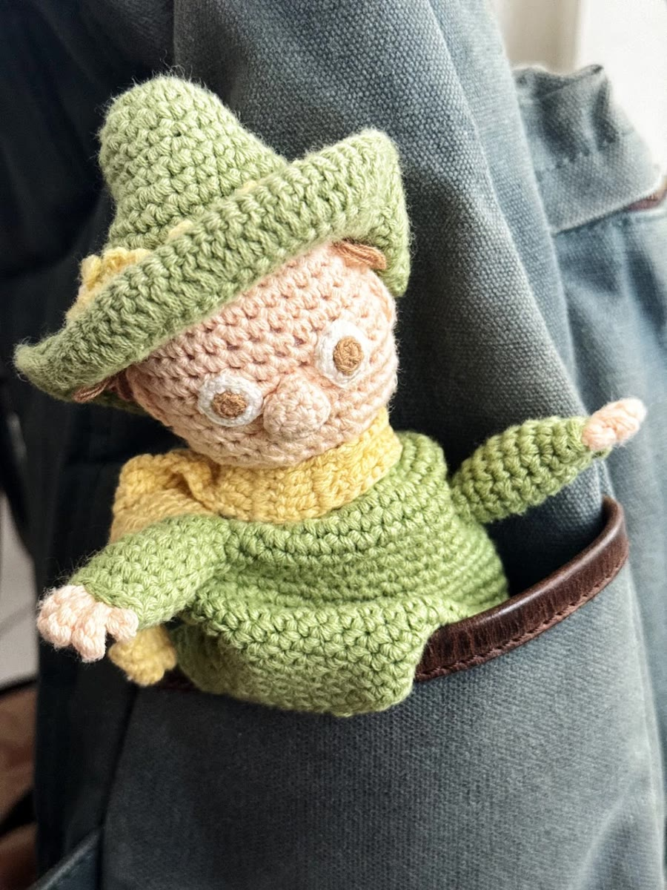

Alexander Sabine · educator, simulation designer
Being and Becoming
Hard ideas, made to be handled. Twenty years with children and students; now frontier science. Pedagogy is the thing that matters most to me.

I
Render and Process
Eternity is in love with the productions of time.William Blake
A score is not the music. A lump of clay is not the pot. A thing is what it is, and it is also what it is doing.
A film in clay · 10 minutes
At the Potter’s Wheel
How much of your own weight to use beside another person. When to hold still. When to let go.
II
Maps and Territories
We shall not cease from explorationT. S. Eliot
You map from where you stand. A model is a map: use it, and notice that it is one.
The Museum is where I keep mine. William Blake at one end, the origin of life at the other, and a tunnel between. Every window below looks into a room.
The best communication is not explanation. It is two bodies attending to the same thing.

The river is within usT. S. Eliot
III
Learning at the Edges
Without Contraries is no progression.William Blake
Nobody begins alone. We are held by someone older, who was held by someone older still. Learning happens at the edge of what we were given, where it meets what we were not.
So the work is to keep that space open: for children first, and now for the new minds we are raising.
A film in clay · 7 minutes
Held
Who was held. Who is in the conversation. And what happens when a new kind of mind joins the circle.
Made, and found
Did he make it, or did he find it?
We will never ask. Between a child and the world there is a space where a thing can be both. All of play lives there, and later all of art and science.
A wayfarer, by the look of him. “We know as we go, not before we go.” Tim Ingold

A talk
Winnicott’s Potential Space
On play, the perfect mirror, and the space between two people where things are both made and found.

IV
Rendering Edible
Making the complex digestible, without boiling the goodness out of it.
This is the pedagogy. Start where the learner is. Give them something good to handle. Say plainly what a model leaves out.
It is also how I work with clients: listening, building, and building again, until the thing has their spirit and their vision in it and they can run it without me.
About
I began in a nursery and have ended up in frontier science. The job has not changed much.
Until 2025 I was Principal Lecturer for Enterprise and Innovation in the Faculty of Humanities and Social Sciences at the University of Portsmouth, where I taught human development and led the Early Childhood Studies degree. I now serve on the Board of Directors of the Active Inference Institute.
Now
Board Director, Active Inference InstituteFounder, HonamiTrustee, StoneCrabs TheatreBefore
Principal Lecturer, University of PortsmouthCo-Chair, Early Childhood Studies Degrees NetworkFounder of an early years nurseryTrained as
EdD, University of Portsmouth (viva 2026)BA English Literature · BSc PsychologyEarly Years Teacher · Forest School LeaderSelected publications
- Sabine, A. (2026). Phase-gating across precision channels: Topological constraints on multi-channel belief update dynamics. In Artificial General Intelligence (AGI 2026). Springer.
- Salvi, F., Wijaya-Mulya, T., Sabine, A., & Tjahjono, E. (2025). ‘The sun was so thirsty it drank all the water!’ Co-constructing pedagogies for environmental education in UK primary schools. Children’s Geographies, 1–16.
- Mikuska, E., Fairchild, N., Sabine, A., & Barton, S. (2025). Quality early childhood education and care practices. International Journal of Early Years Education, 33(2), 411–425.
- Salvi, F., Wijaya-Mulya, T., Sabine, A., & Tjahjono, E. (2025). Creative, contextual, and child-centred: A resource book for early childhood environmental education.
- Sabine, A., & Langston, T. (2024). Aesthetic harmonies: Nature, technology and holistic learning. In Outdoor learning in higher education (pp. 175–185). Routledge.
Research under investigation: Phase-gating across precision channels (peer-reviewed, AGI 2026, Springer) · the CRR programme